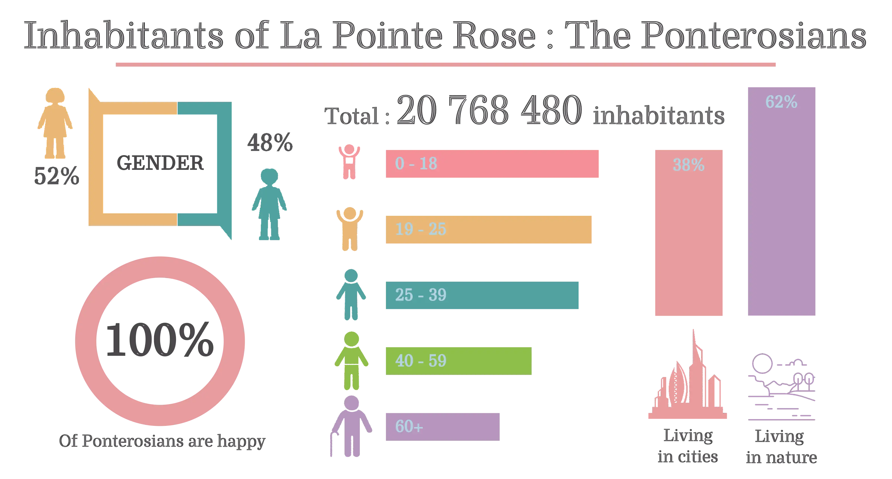
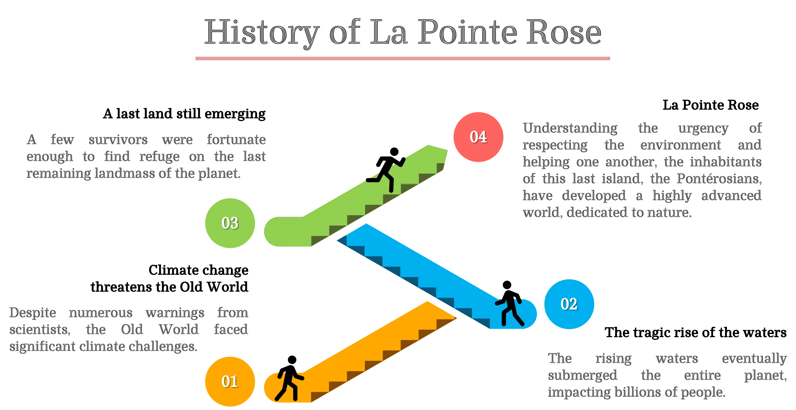
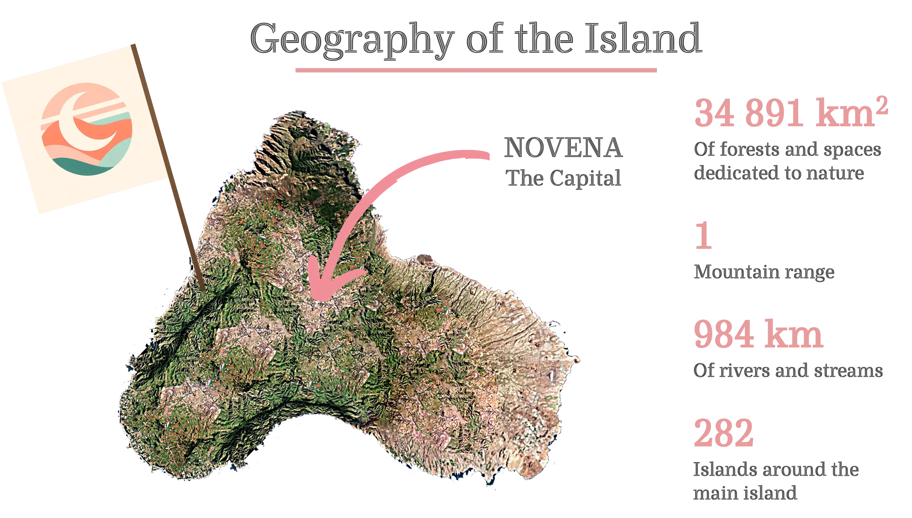
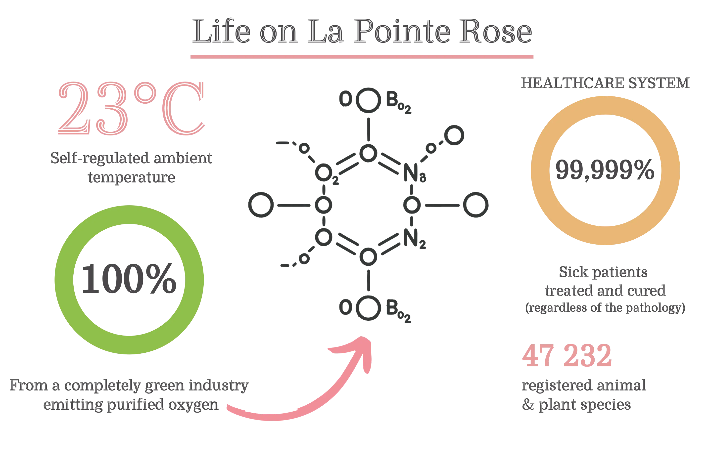
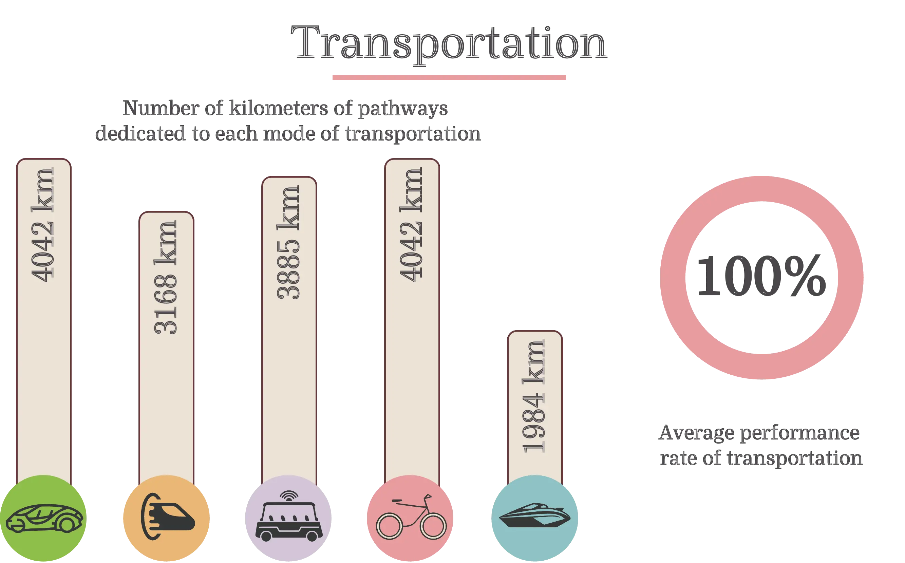
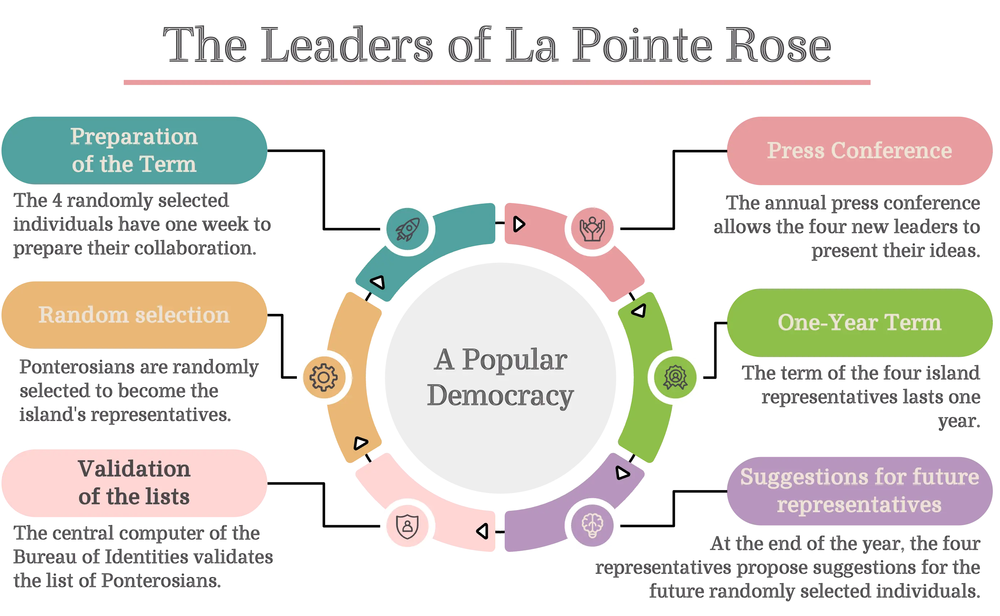
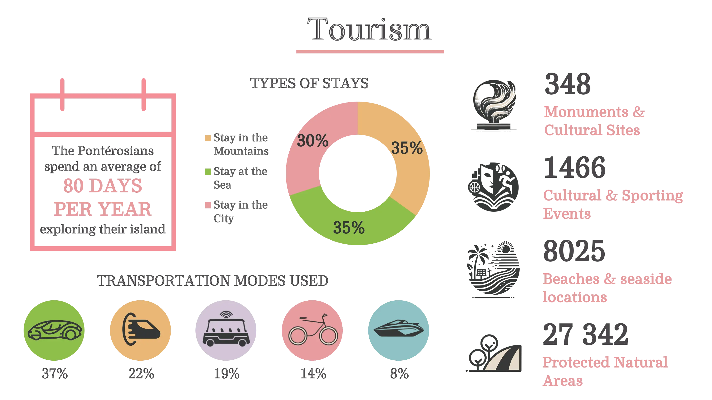
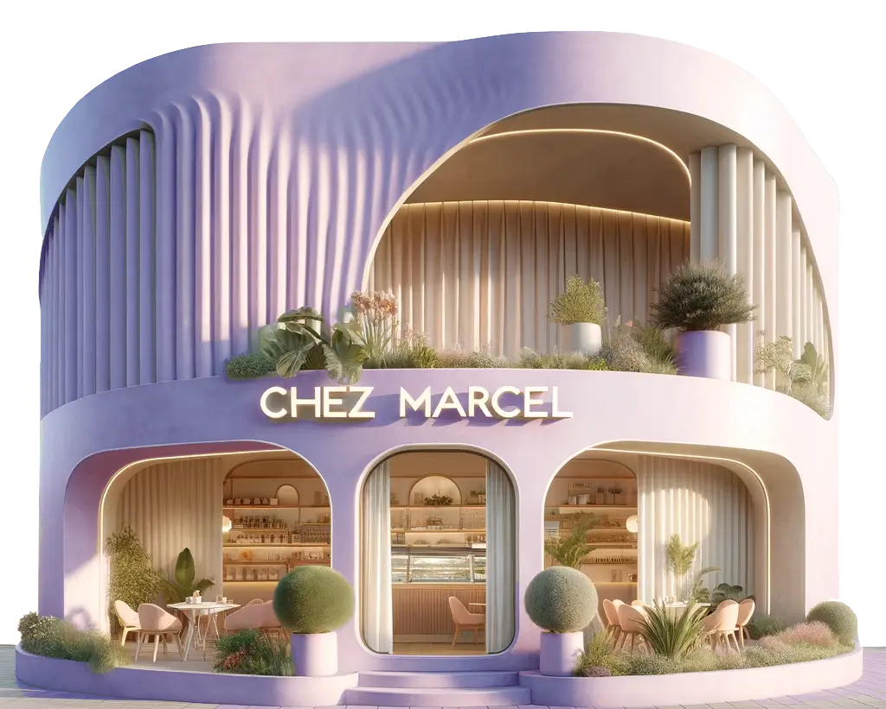

The film universe
The rising waters swallowed the planet.
There was no hope left… except one island.

The island
Although the tragic rise of the waters made La Pointe Rose the last remaining land on the planet, a population lives there peacefully, free and without negative thoughts.
To protect and restore their last ecosystem, the Pontérosians united to develop environmentally friendly technologies — the symbiosis between human beings, technology and nature, in a virtuous and soothing world.







Scroll to explore the island →
Tana's story
Tana, in her thirties, is a journalist. Appreciated and recognized by all, she savors her daily life on La Pointe Rose.
One morning, Tana finds a newspaper in the street. This seemingly innocuous event sends her into a disturbing tailspin. The article topics are troubling, and some of the words used — such as “plastic,” “violence,” or “war” — are entirely unfamiliar to her.
With a dull anxiety, she intuitively feels that the harmony reigning on the island might be just an illusion. She must understand. She is not sure. She even doubts whether she truly wants to know…
The full synopsis
From the island refuge to the most troubling of secrets — the full story, told as a narrative.
Read the story →
Note of intent
My mother was not yet 20 and aspired to become a film director. Computers did not exist at the time. She kept a handwritten notebook where she jotted down ideas for films. Accepted into film school, much to her regret, life did not allow her to pursue the education she had dreamed of so dearly.
In 2017, during a conversation, she shared this notebook with me. One of her early ideas truly captivated me! I felt an undeniable need to continue what she had been unable to accomplish: to make a film based on her idea.
The full note of intent
Forty years of an idea kept secret, and why suspense became the way to tell it.
Read the note of intent →Behind the scenes
On June 19, 2026, the teaser was screened at the Cinéma Le Central in Puteaux.
The screening night
The project's presentation, the teaser, the Q&A with the audience and the making of — the whole night at Le Central, on video.
Relive the night →Go further